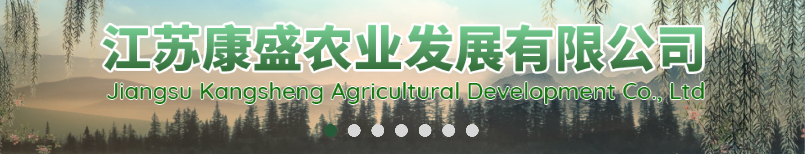
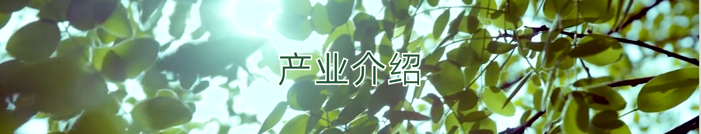
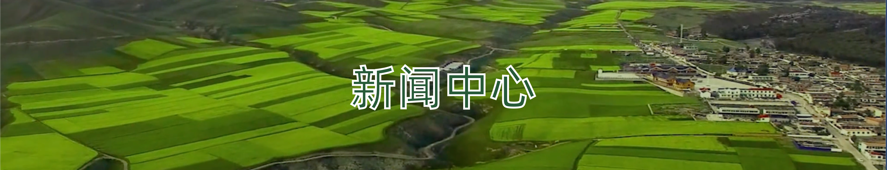

关于我们
江苏康盛农业发展有限公司成立于2011年4月7日，占地面积约200亩，注册资本2000万元人民币，总投资3亿元。项目建设分三期进行，总生产规模达到日产70吨产能，康盛农业所在地铜山区是江苏省和徐州市重要的食用菌生产大区，随着农业产业结构的不断调整，食用菌生产得到迅速发展，特别是10年铜山区……
查看更多>>
版权所有©2020：江苏康盛农业发展有限公司 备案:苏ICP备12063130号
地址:江苏首徐州市铜山区新区街道办事处徐村电话:0516-85138666邮箱: zgjsksny@163.com